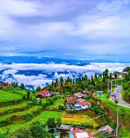
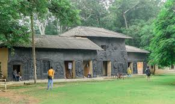
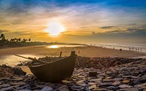

Kolkata

The state capital, known as the 'City of Joy', famous for its grand colonial architecture (like the Victoria Memorial), vibrant cultural life, the Hooghly River, and its intellectual history.
Darjeeling

A popular hill station famous for its spectacular views of Mt. Kanchenjunga, its world-renowned tea plantations, and the UNESCO World Heritage Darjeeling Himalayan Railway (Toy Train).
Sundarbans National Park

A UNESCO World Heritage Site and a large block of tidal halophytic mangrove forests, famous as a major reserve for the magnificent Royal Bengal Tiger.
Shantiniketan

The place where Nobel Laureate Rabindranath Tagore founded Visva-Bharati University, known for its unique educational system, art, and cultural festivals.
Digha

A popular seaside resort town in the Bay of Bengal, known for its long, flat beaches and as a tranquil getaway from the city hustle.